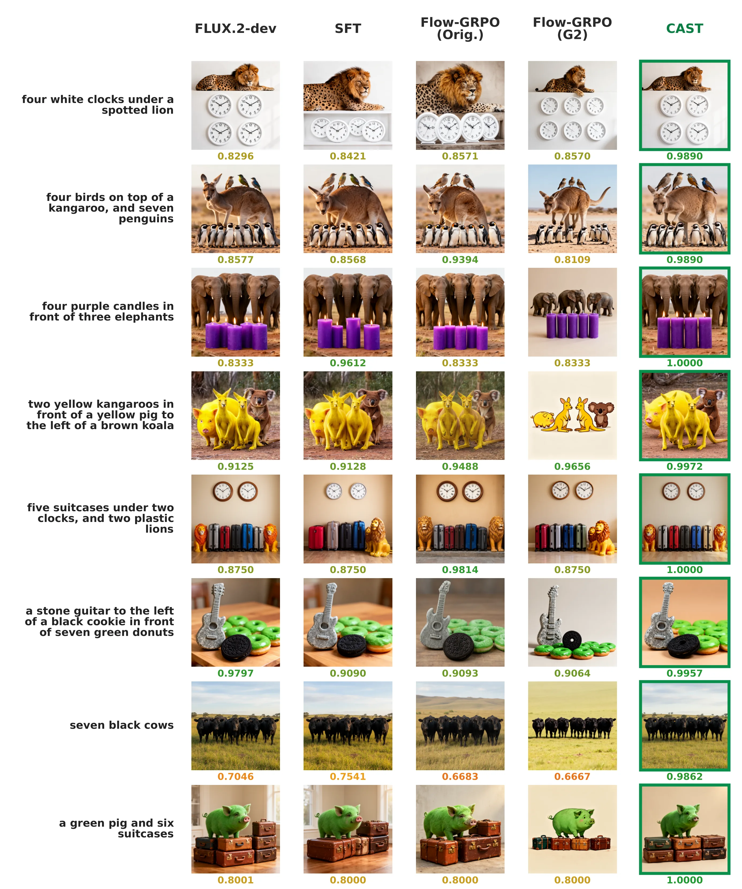
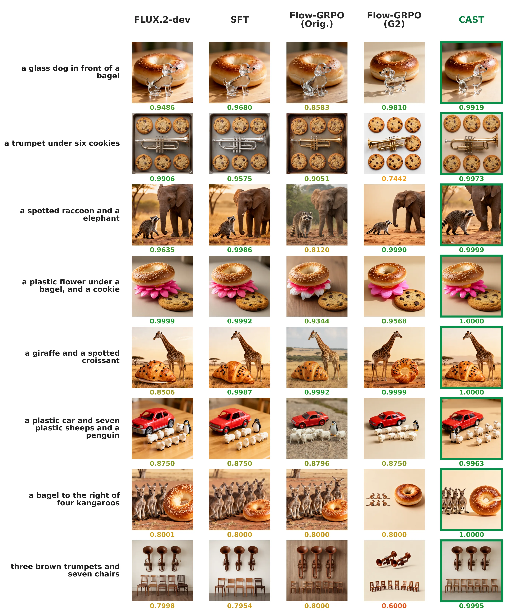
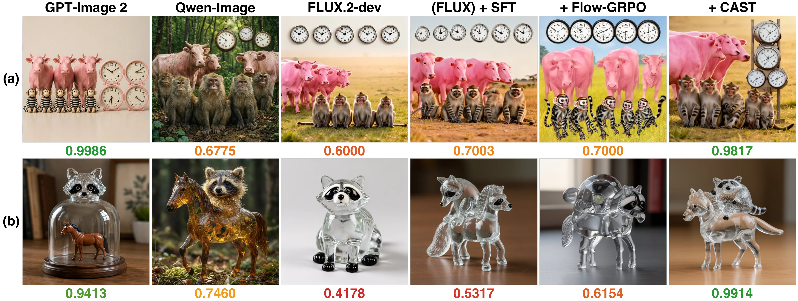
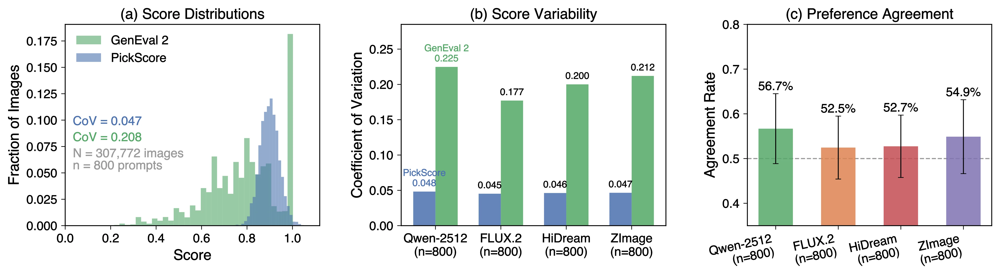
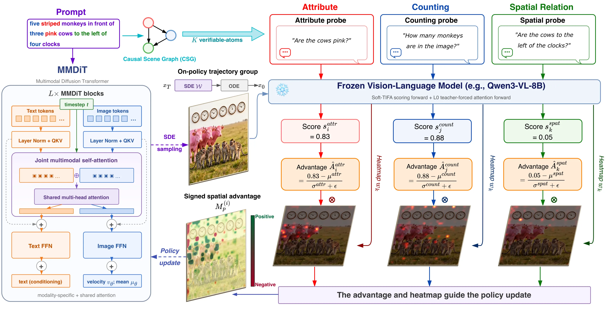
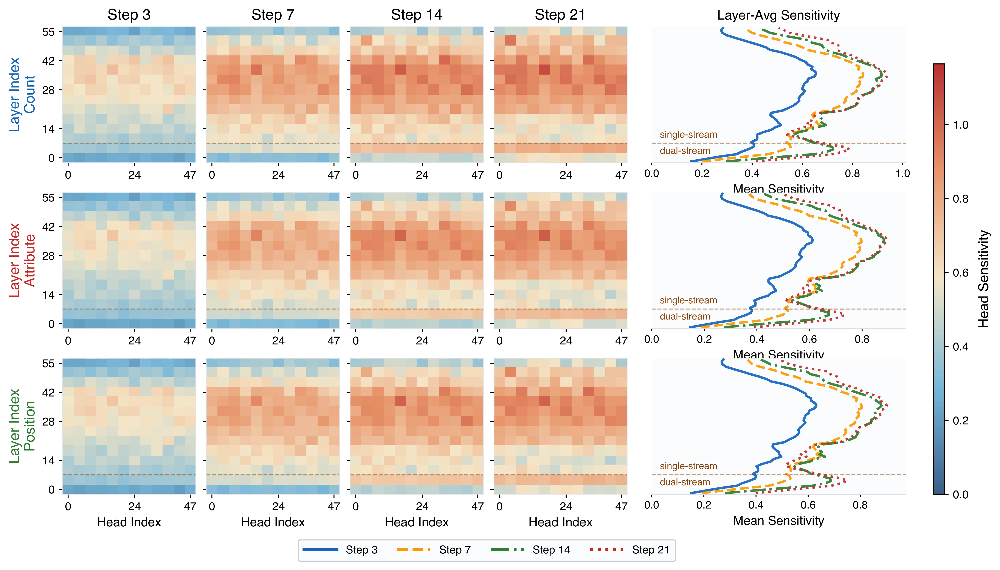
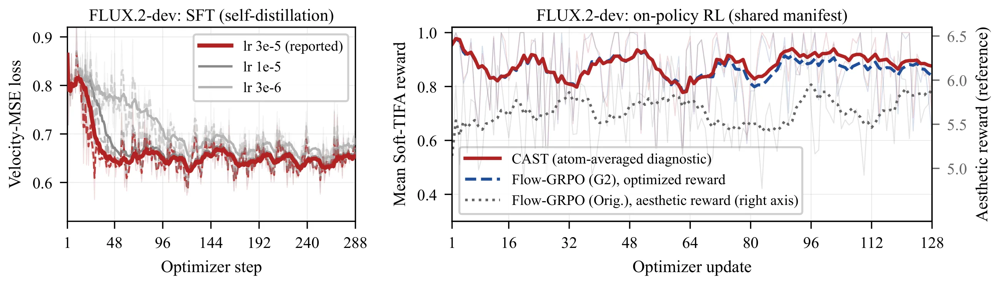

Online reinforcement learning has been successfully extended to flow matching for diffusion model (DM) image generation. However, this paradigm faces three limitations: (1) Window selection. Existing methods typically manually set the stochastic differential equation (SDE) sampling window, i.e., the denoising steps where exploration noise is injected. We instead determine it from each model's denoising trajectory. (2) Reward saturation. Current methods rely heavily on scoring models trained on human annotations; we find that such scores are extremely high and nearly indistinguishable on the latest SOTA open-source DMs, making advantage estimation largely ineffective. (3) Sample inefficiency. A single scalar reward collapses different failure modes into almost identical scores, leaving minimal gradient guidance for targeted improvement.
To address these issues, we propose CAST (Causal Advantage-Structured Training), an RL fine-tuning method for pretrained DMs, which (1) identifies the denoising step at which each model fixes the objects and their spatial arrangement in the image and uses that timing to set the SDE window, (2) decomposes each prompt via Causal Scene Graphs (CSG) into verifiable-atoms, i.e., minimal semantic units such as an object, count, attribute, or spatial relation that can each be checked independently, and rewards each atom separately, and (3) projects the signed atom-level advantages into pixel space through teacher-forced attention and uses them to spatially weight the SDE policy objective. We fine-tune two of the strongest open-source DMs, FLUX.2-dev and Qwen-Image-2512, with CAST, and evaluate them on GenEval 2, a compositional benchmark on which these models still fail frequently, and on Qwen-Image-Bench for overall quality. Within almost the same training budget, CAST's improvement over the base model on the most challenging GenEval 2 prompts is up to 3.07× that of Flow-GRPO, while overall generation quality also improves.
We identify two properties of modern diffusion models that motivate CAST's design:


Within the same 2,048-image and 128-update budget and under the same reward signal, the Hard Case gain of CAST over the base model is 1.93× that of scalar-reward Flow-GRPO on FLUX.2-dev and 3.07× on Qwen-Image-2512. CAST also surpasses the high-selectivity distillation upper bound SFT (3/64) on both backbones, whose Hard Case gain amounts to only 37% and 58% of CAST's despite its 32× larger image budget, while attaining the highest Qwen-Image-Bench Overall on both backbones.
Final held-out performance on GenEval 2 and Qwen-Image-Bench. G2 Hard-50 is the GenEval 2 Overall score on the 50-prompt Hard Case subset of unsaturated evaluation prompts. Values are mean ± sample standard deviation over four matched generation-seed replicates.
| Backbone | Method | G2 Hard-50 ↑ | G2 Overall ↑ | G2 Count ↑ | G2 Position ↑ | QIB Overall ↑ |
|---|---|---|---|---|---|---|
| FLUX.2-dev | Base | 65.72 ± 1.83 | 83.16 ± 0.20 | 66.15 ± 0.60 | 73.29 ± 0.42 | 52.84 ± 0.27 |
| SFT (4/8) | 67.28 ± 2.06 | 83.31 ± 0.24 | 66.37 ± 0.60 | 73.46 ± 0.51 | 52.76 ± 0.25 | |
| SFT (3/64) | 69.76 ± 2.48 | 83.93 ± 0.40 | 67.27 ± 0.60 | 74.15 ± 0.88 | 52.42 ± 0.16 | |
| Flow-GRPO (Orig.) | 64.26 ± 1.76 | 81.85 ± 0.22 | 64.18 ± 0.44 | 72.71 ± 1.13 | 53.34 ± 0.28 | |
| Flow-GRPO (G2) | 71.37 ± 1.90 | 84.54 ± 0.11 | 68.39 ± 0.32 | 74.98 ± 0.62 | 52.73 ± 0.06 | |
| CAST | 76.64 ± 2.39 | 85.95 ± 0.10 | 70.85 ± 0.29 | 76.90 ± 0.53 | 53.44 ± 0.29 | |
| Qwen-Image-2512 | Base | 67.79 ± 1.81 | 78.02 ± 0.56 | 67.14 ± 1.59 | 59.60 ± 0.84 | 50.68 ± 0.23 |
| SFT (4/8) | 68.55 ± 1.79 | 78.27 ± 0.54 | 67.64 ± 1.55 | 59.62 ± 0.78 | 50.45 ± 0.24 | |
| SFT (3/64) | 70.12 ± 1.84 | 79.29 ± 0.45 | 69.64 ± 1.37 | 59.72 ± 0.53 | 49.55 ± 0.29 | |
| Flow-GRPO (Orig.) | 68.60 ± 1.75 | 77.90 ± 0.44 | 67.15 ± 1.07 | 59.92 ± 0.91 | 50.11 ± 0.26 | |
| Flow-GRPO (G2) | 69.11 ± 1.56 | 79.59 ± 0.22 | 70.48 ± 0.62 | 58.59 ± 0.25 | 50.70 ± 0.15 | |
| CAST | 71.84 ± 1.85 | 80.81 ± 0.23 | 72.35 ± 0.55 | 60.45 ± 0.43 | 51.32 ± 0.15 |
Raw training cost within each backbone. All generated and scored candidates, including filtered or discarded candidates, are counted.
| Method | Images ↓ | Updates ↓ | FLUX H200-h ↓ | Qwen H200-h ↓ |
|---|---|---|---|---|
| SFT (4/8) | 8,192 | 384 | 95.00 | 90.24 |
| SFT (3/64) | 65,536 | 288 | 749.51 | 723.70 |
| Flow-GRPO (Orig.) | 2,048 | 128 | 28.91 | 28.75 |
| Flow-GRPO (G2) | 2,048 | 128 | 32.43 | 32.21 |
| CAST | 2,048 | 128 | 32.90 | 32.51 |
Ablation of atom-level credit assignment and spatial weighting on FLUX.2-dev. All variants use the same training prompts, SDE window, generated-image budget, and optimization settings. Values are mean ± sample standard deviation over four matched generation-seed replicates.
| Variant | Advantage | Spatial map | G2 Overall ↑ | QIB Overall ↑ |
|---|---|---|---|---|
| Sum-reward baseline | per-image | none | 84.54 ± 0.11 | 52.73 ± 0.06 |
| Per-atom advantage | per-atom | none | 85.12 ± 0.14 | 52.98 ± 0.18 |
| Spatial weighting | per-image | aggregated attention | 84.91 ± 0.16 | 53.06 ± 0.20 |
| Shuffled correspondence | per-atom | shuffled atom maps | 85.00 ± 0.15 | 52.89 ± 0.22 |
| CAST | per-atom | matched atom maps | 85.95 ± 0.10 | 53.44 ± 0.29 |


If you find our work useful in your research, please cite:
@article{yu2026cast,
title={CAST: Causal Advantage-Structured Training with Spatially Grounded Compositional Rewards for Diffusion Models},
author={Shu Yu and Chaochao Lu},
year={2026},
journal={arXiv preprint arXiv:XXXX.XXXXX},
}